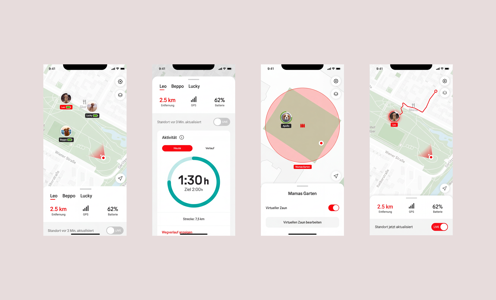
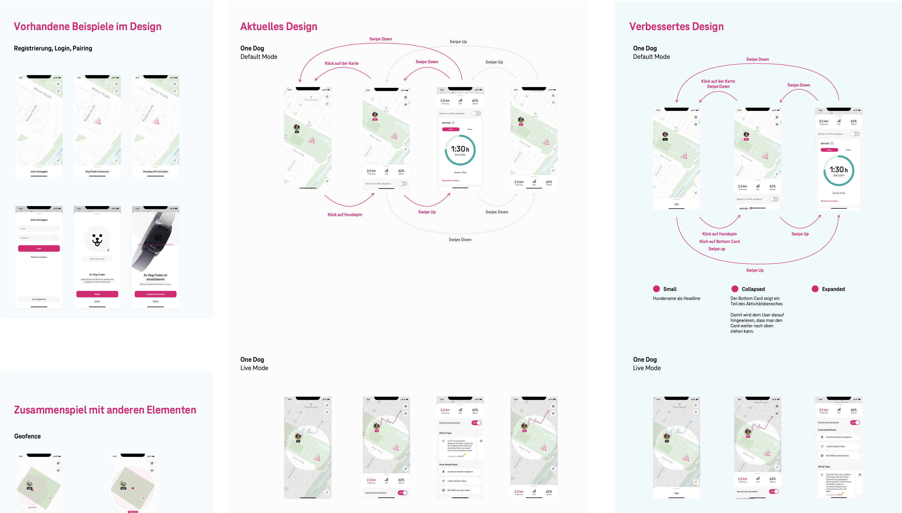

Mobile app · IoT · testing and QA
Dog Tracker app /
adapting the concept to the hardware through testing and QA
A GPS tracker for dogs with a companion app for iOS and Android. My work focused on testing the device and the app, adapting the concept to the hardware specifications, quality assurance and building a working relationship between the client, the agency and the external development team.
Context
The app accompanies a GPS tracker for dogs. Its features include the dog's live position, a virtual fence with alerts, a route history, activity tracking to support healthy habits and warnings about possible poison sources in public spaces. A live mode with guidance and resources helps owners find their dog quickly and calmly.
I joined the project before development started, when the main concept and designs were largely in place. As with many connected devices, parts of the experience depended on hardware characteristics such as location accuracy and pairing behaviour. Some of these only became visible when testing with the physical device, so testing and iteration became a central part of my role.
Approach
01
Specification and handover. I continued the task flow documentation started by a colleague, detailed the interactions and wrote the functional descriptions used by the development team. The project followed a waterfall process, so the specification was handed over as a whole.
02
Route history. During development, the client requested a route history feature. I designed its interaction model: users can select a point in time on a slider to see the dog's position at that moment, or select a time range to display the full route.

↑ Home screen, dog profile, virtual fence and route history features
03
Device and app testing. I was responsible for testing the tracker and the app across the beta releases. Testing with the physical device showed differences between the expected and the actual hardware specifications, among others in location accuracy, in the behaviour of the virtual fence near its boundary and in pairing. I documented these findings for the client and the development team as a basis for the next decisions.
04
Communication under pressure. The first betas came with open issues on several sides at once: in the build, in the hardware and in parts of the concept. The client, the agency and the development team each had their own priorities and contractual commitments, and none of them reported to the others. Under this pressure, communication with the developers moved mostly to email, and discussions tended to focus on positions rather than solutions.
Within the agency, there were different views on how far we should support the development team beyond what the contract required. Both views had good reasons. I argued for a more collaborative approach and, as the most junior person on the team, raised it carefully and kept the discussion focused on the work.
05
Adapting the concept. Based on the test results, I adapted the features that depended most on these specifications.
Geofence alerts
Adjusted the alert logic of the virtual fence with a tolerance around the boundary, to reduce alerts while the dog is still inside the area.
Location accuracy
Revised the in-app copy to communicate the accuracy of the location data transparently.
Route history
Redesigned the route history according to the location data the device provides.
Onboarding and pairing
Revised the first-time use flow, including the pairing process, based on the test findings.
06
Interaction improvements. The test results also informed improvements to existing interactions, among them the behaviour of the expandable bottom sheet and the live mode. In parallel, I extended the concept with a dog profile, which links each tracker to a specific dog with its breed and characteristics.

↑ Snippet from the enhancement concept for the expandable bottom sheet
07
Quality assurance and collaboration. I was responsible for QA. I introduced a more structured and specific format for issue reports, with additional detail for complex or recurring issues. For the first-time use flow, I documented all actions and paths.
To move the collaboration forward, I proposed regular calls with the development team instead of long email threads, and offered to walk them through recurring issues. In internal discussions, I represented the constraints the developers were working with, because they were real. Once the teams were talking directly, issues were resolved considerably faster, and the working relationship became more constructive.
After the UX lead left the project, I took on the role of acting UX lead and continued this collaboration with the client and the development team until the end of my involvement.
What I contributed
Testing and QA
Device and app testing across the beta releases, and a structured issue reporting process.
Concept adaptation
Geofence alerts, route history and onboarding adapted to the hardware specifications.
Interaction design
Route history, bottom sheet, live mode and dog profile.
Collaboration
Moved the communication with the developers to regular calls and represented their constraints within the agency.
Outcome
Testing
device and app across the betas
Calls
instead of email threads with the developers
Acting lead
in the final project phase
The project was discontinued before launch due to a change in the client's budget. Until then, the concept had been tested with the physical device and adapted to its specifications, and the QA process and regular calls gave the client, the developers and the design team a shared basis for their work. It was a demanding project and one of those I learned the most from. What I enjoyed most was finding solutions under pressure and helping three teams with different priorities work together.